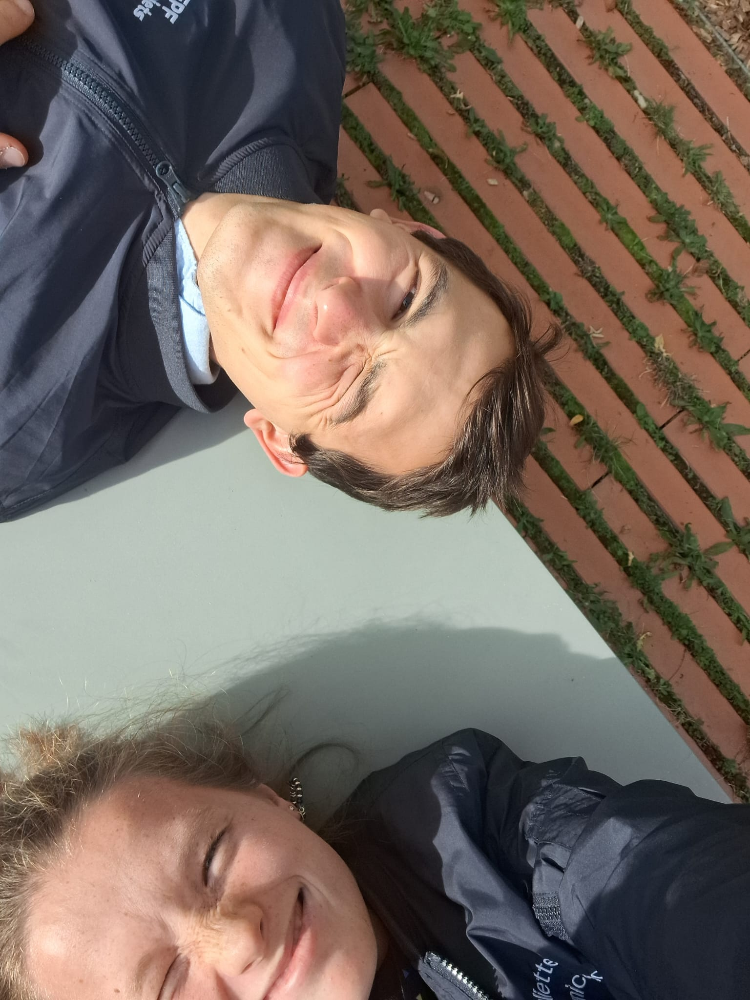

Coucouuuu, c'est la personne la plus incroyable de la Terre qui t'écrit👋👋
Eh oui, il fallait bien que je trouve une idée de cadeau pour toi à t'offrir même si tu es à des milliers de kilomètres de moi.
Avant toute chose je voulais te souhaiter un joyeux Noël même si tu es loin de moi.
Profite parce que je vais très vite
venir te casser les pieds.
Ensuite, je te souhaite la bienvenue sur mon super site web.
C'est en quelques sorte un album photo qui est là
pour qu'on puisse se rappeler de nos 3 années passées ensemble à l'EPF. J'espère que l'idée de plaira
et que tu prendras du plaisir à regarder les photos.
Sans plus tarder, je te laisse cliquer sur le bouton en bas à droite pour la 1ère année.
Gros bisouuus
Saint-Cloud
PS : Je sais que t'aimes pas les trucs qui durent trop longtemps qui sont toujours pareil mais j'espère que tu prendras
quand même le temps de jeter un coup d'oeil 3 secondes😜.